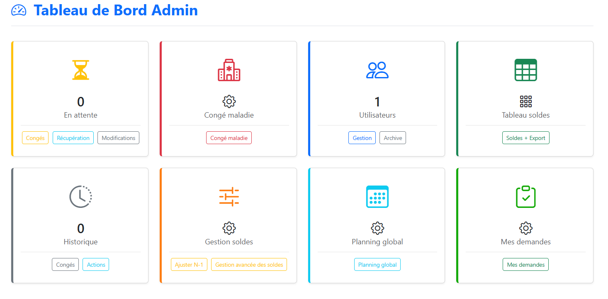
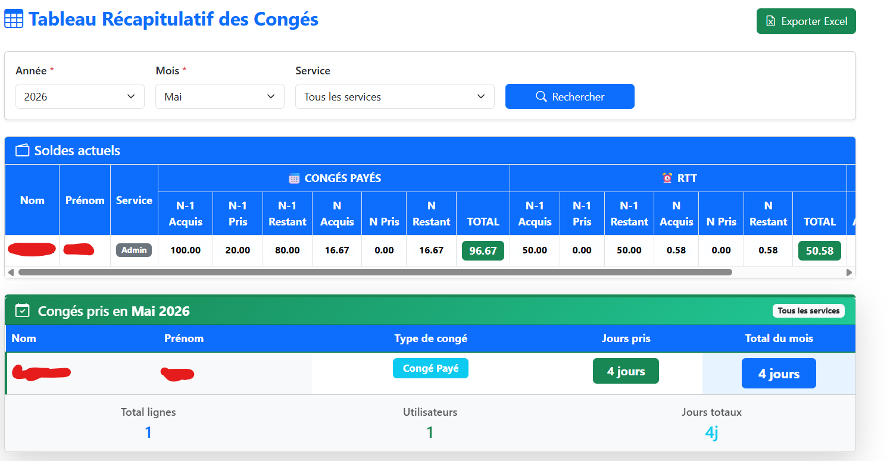
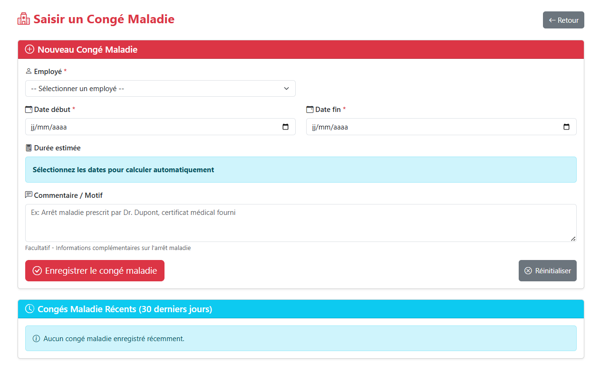
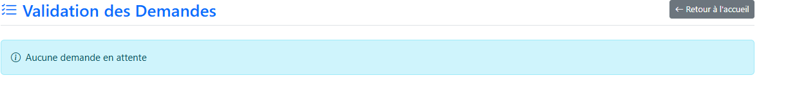
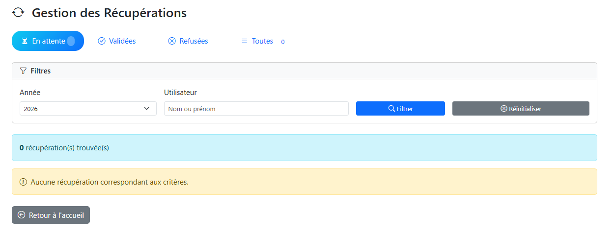
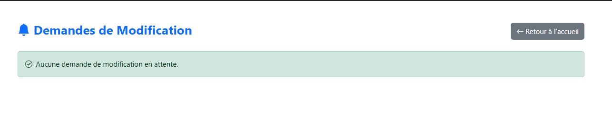
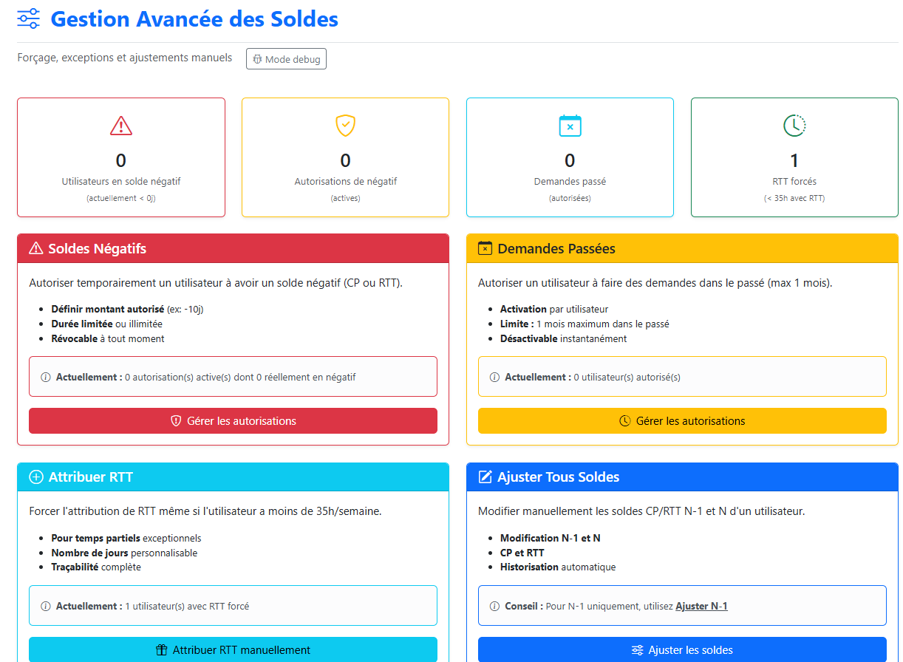
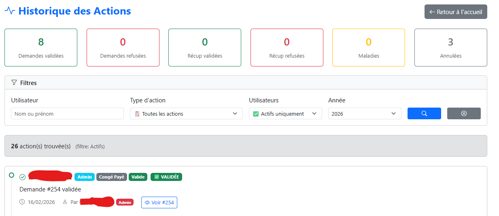
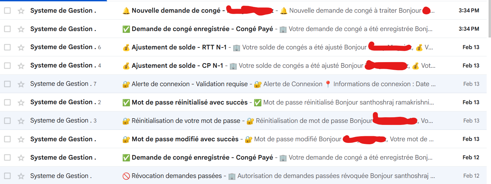
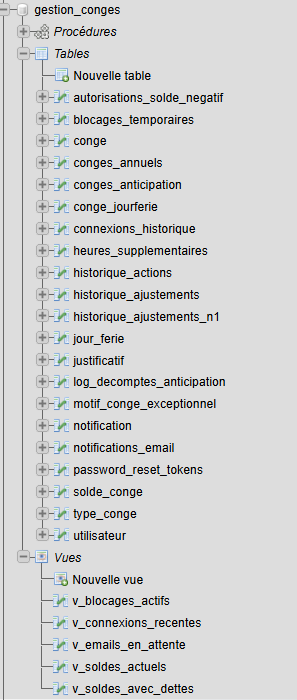

Suite au stage effectué en première année et au logiciel V1 que j'avais conçu, ACCEN INFORMATIQUE m'a confié l'amélioration de l'application de gestion des congés et la correction des limitations d'utilisation, ainsi que l'ajout de nouvelles fonctionnalités supplémentaires et l'optimisation visuelle. L'objectif était donc de leur fournir une V2 avec de meilleures fonctionnalités, un meilleur suivi et plus de possibilités de congés que la V1, mais aussi de leur proposer un aspect visuel moderne.
L'entreprise avait besoin de nouvelles fonctionnalités :
Le projet a été développé avec les technologies suivantes :
Cette V2 m'a permis d'approfondir mes compétences en développement back-end et front-end. Elle m'a permis d'apprendre de nouvelles choses comme le système de suivi et la double authentification lors de la connexion via les mails et les systèmes de logs.
Cette expérience m'a aussi appris à faire évoluer une application en production en tenant compte des besoins utilisateurs et des contraintes.

Interface principale affichant les différentes interfaces administrateur

Tableau des soldes, avec tous les soldes en N-1, en N et l'ancienneté

Formulaire pour saisir les congés maladie



Permet de valider les différentes demandes de congés et aussi de gérer les demandes de modifications sur une demande validée

Interface pour gérer les autorisations et les soldes


Log de chaque action et différents mails de suivie

Vue d’ensemble des tables et relations de la base de données.